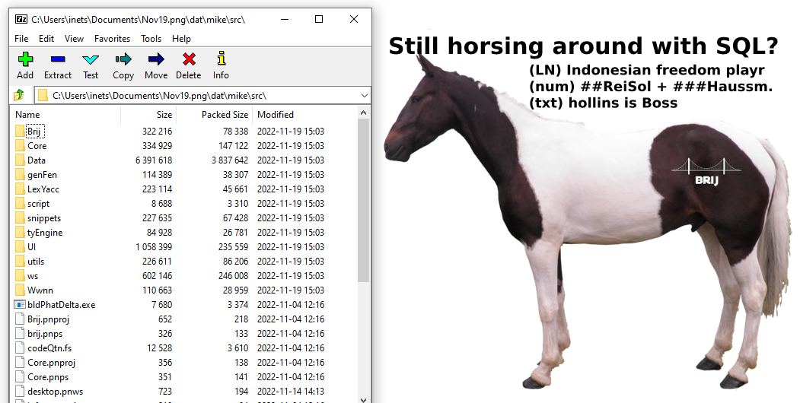

The Founder
The Skinny
Our principal developer is Mike Trivedi.
Mike's One-Page Resume
Mike's Linked-in profile (Not up to date - this account was compromised - please see addenda)
Mike has been developing Database Systems since 1989.
Mike is a 10x Developer and a serial enterpreneur.
The Details
Below we offer an in-depth review of only a few select Products/Projects from Mike's rich background. These have been hand-picked to provide you what you need.
Here is some further information.
Founder, Editor and Publisher: Teen-Talk
In my Senior year at University I launched a magazine called Teen-Talk to considerable acclaim. I headed a team of about 20 freelancers and ran the magazine for 3 years. Towards the end, the day a new issue hit the stands you would find a fresh copy in the hands of every popular teenager in town.
My balance sheet was so strong that two nationalized banks were willing to back me to take the magazine national. I took some forays into the nearest large city and recruited a skeleton crew there.
But all the late nights at the Press and all the media partying had taken its toll, and I decided to take a few years off - using the magazine's coffers to finance my trip to Philadelphia to attend Temple University's graduate Journalism program.
First PC and ToolBook gig
On campus, amongst other things, I published the newsletter for MUG (the Microcomputer Users Group). A medical school faculty member and Macintosh enthusiast had written an animated program - using HyperCard - showing chemical processes in the kidney. The program was so famous that students from other colleges took a field trip to come see his work in the Temple computer labs. I was asked to interview him for the newsletter, and afterwards I asked him why there wasn't a Windows version of his program.
"I don't know anyone who knows both Windows and HyperCard," he said.
I told him I could do it. The gig bought me my first PC and a copy of Asymetrix ToolBook.
I was soon a regular on the ToolBook internet newsgroup (the equivalent of today's StackOverflow).
There, I offered advice to a Chicago professor who was using ToolBook to build a writing app. That led to a gig: I built a spell-checker for his app.
Later I offered advice to an Orlando-based German company which was building an app for german tourists in Florida. That led to a gig where I worked over 200 hours on their app: a multimedia CD-ROM tour guide.
A local design firm emailed me a ToolBook job offer and I ended up coding animated apps for some very sophisticated clients including IBM, Coca-Cola and Bugle Boy Jeans. I also coded a kiosk app for the Chicago Transit Authority. This firm was working on tight deadlines in an assembly-line format: the art department would output frames/artwork and we'd be coding (sometimes into the wee hours) on a breakneck schedule.
Founder: Early website + the Avatar
I was told (I have no documentation for this claim) that my personal website was one of the first 200 websites on the internet.
I was also one of the first programmers to tinker with a popular chat script, and believe (again, no proof) that I invented the Avatar for a perl cgi script on the same personal website. My script allowed users to choose an image which would appear above their name in the chat window. This was in or around 1992 (FaceBook was founded in 2004).
Founder: Trivedi Solutions
In my Junior year at Journalism school I was awarded an Assistantship where I worked 20 hours a week managing a local Novell LAN and doing some light coding. In my Senior year a LAN manager position opened up and they offered me the job. I spent the next few years at Temple University super-excited and learning something new every week. The best part of being a LAN manager is that once you have everything working smoothly you have lots of free time; and Universities have access to all the software they need at discounted rates. I felt like a kid at a candy shop.
I soon founded my company and began building apps for multiple clients.
One of the first apps I built for clients was NADA, a CMS (100% Visual Basic) for a local call center: they input/edited the text in a database and clicked a button to rebuild online help files which were used by the operators. When I next spoke to the manager - maybe five years later - they were still using my product, no issues.
Consulting Career
In the mid 1990s I happened to be consulting at a company which sent me to get trained coding in Lotus Notes/Domino. This was a game changer for my career. Soon IBM bought the product and invested huge resources into it (In the 90s IBM spent more on research than Microsoft and Oracle combined, and filed for more patents than anyone else in the industry). By the end of the decade over 87% of the S&P 500 was using Notes/Domino.
Over the next decade I was in very high demand, and had the opportunity to work at some of America's best companies, household names. I worked at very different environments and learned new skills every single month. I held IBM's highest level of certification - Principal Application Developer - in various versions.
Market Demand During the dot-com bust my programming buddies told me they were experiencing increased bench time, so after a gig ended I applied for three positions. There ended up being a bidding war: all three wanted me. (I believe it wasn't just my resume but also the market for Notes Developers)
My consulting company - Trivedi Solutions - became an Advanced IBM Business Partner in 2001.
Founder: mLog
I was one of the first people to download Java and began playing with it right away. I read Thinking in Java and started building an app to track my workouts (at the time I was swimming, bicycling and running long distance). I used pure OOP and a simple CSV file as the back-end. I am sure there were plenty of workout apps in the market then, but my app had sophisticated features (like tracking mileage on different shoes) which predated Strava by more than a decade. 100% Java, 100% Web (applet)
Founder: PDF Rendering Engine
In the mid 90s a DowJones30 pharmaceutical company hired me to finish porting a Document Management System to Notes/Domino. About every month or so my manager and I would travel to the New Jersey office to meet with X (my manager's colleague) and discuss system issues. Twice in a row X arrived late for the meeting because "He had been up all night for an FDA submission."
The Problem
When asked for details I was told that he had to stay in the office if any user of the system needed a frozen (PDF) copy of their document. In those days we didn't have Save to PDF and this company used more than 10 varieties of document software (different versions of WordPerfect, Word etc.). So X was sitting around just to open the required document and save it to PDF.
The Solution
I told my manager I could build an app for him if given a test server. In about two months (in my spare time and without affecting my tasklist) I had a working app - a native Windows Service - which took incoming documents and returned a PDF version of them.
Cutting Edge
Shortly after my app was put into production, the company was visited by a team from Adobe. My manager attended the meeting and told them what we had built; Adobe was very interested - they were building something similar. This experience told me I was at the very cutting edge of tech.
10x Developer
This company had a quarterly "Town Hall" meeting for managers where everyone would talk about what they were working on (to avoid duplication and encourage sharing resources etc.) My manager told them what we had built, and found out that another team had been working on the same problem for six months. It was a team of 3 to 5 developers and they were only halfway done. After comparing notes, that project was shelved and my manager got the budget; which he used to hire a full-time C++ developer to work on a better version of my app with all the features other departments needed.
This experience told me I was possibly a 10x developer.
Note: I was a consultant, and do not own the Copyright or the Code for this product. However, 100% of the design + coding was mine
Founder: mChart for Notes(TM)
Over the years IBM added many features to Notes - in the beginning you had to code it using '@Formulas' and a version of Basic. Later they opened up the engine to JavaScript and Java. But there was still no charting capability; most clients bought Notes Graph, an add-on which IBM sold for $40 per seat.
I built mChart, a Java graphing app for IBM Domino, using an open source library - in less than 500 hours - and sold it a few times (my biggest sale was to a Swiss HR company).
IBM's testing wing gave my product an IBM ServerProven Certification and free listings in their IBM showcase catalogs. Please click here to see my company's PR release from July 2006 for this news.
I really should have done more with this product but I was so swamped with work and social obligations that I allowed it to sit on the back burner for a while and then the 2008 recession slowed the market down considerably.
I was also unsure about the legality of open source (which was in its nascency then). I resolved to build my own libraries in the future to avoid possible licensing issues (an approach I have taken for Brij, see here)
Founder: CryptoEditor(TM) IDE
"Necessity breeds Invention."
Anonymous
You will find a detailed description of the Security issues I dealt with here.
In 2018, I was already building the Brij UI in Swing, so I decided to take a short diversion and created a basic IDE with:
- Screenshots disabled
- Printing disabled
- Clipboard disabled (there was a secure internal clipboard)
Next I refactored all my code into a single code file, over 15k lines, with nested classes (allowed in Java).
The system I created was a single Jar file - under 250k bytes - which, when launched, did the following:
- First it created a virtual drive in memory
- Next it asked for my encrypted source file
- Then it decrypted the code and compiled it to memory on the virtual drive
- Finally it launched the program virtually
I am aware that there is currently a considerable market for tools like ProGuard which offer code obfuscation; but to the best of my knowledge there is no similar tool to guard code from hackers during development. The amount of ideas stolen are legendary; I am sure inventors would be happy to invest in a product like CryptoEditor to guard their intellectual property. I would like to eventually port this product to F# and market it.
Founder: Brij
My life has always seemed to run on two tracks: coding and literature. In the early naughts I decided to retire early (my consulting career had been very lucrative) and focus on writing.
I wrote a novel and about a dozen short stories before IBM took Notes off the market.
In 2016 I decided to build a new, better version of IBM Notes/Domino.
Other people have had the same idea too: one of the most successful Notes clones is a system called CouchBase.
However, CouchBase and others built the backend. I wanted a newer, better version of Notes using an open-source backend like MongoDB.
I asked myself this question: Why was Notes so successful?
I recollected the many fans of the software. At Fannie Mae, for instance, a VP had approached me with a requirement for Key Performance Indicator Queries. He had expected it to take a few weeks, and I had built it in days. I became his favorite at the office. This was RAD: Rapid Application Development. No other Database System was close to it, except maybe Visual Basic.
I thought: What if I could build a product today which would allow that VP to build his report himself?
This would be a desktop product like Notes or Excel BUT would require no coding whatsover. None.
This product would require heavy meta-programming; and for a while I thought it might not even be possible to build something that would be a No-code Database System.
I kept doing research while working on the early versions of Brij. As time went by the challenges and solutions took clearer shape.
In 2021 I ported Brij to F#, which was a huge leap forward in resolving all open tasks and addressing all difficulties. Suddenly it was all possible.
Founder: Brij Steganographic File Backup Solution
"Necessity breeds Invention."
Anonymous
When I ported Brij from Java to F#, I initially planned to also port the CryptoEditor IDE. However this was essentially a different product and my focus was on Brij. The new tools a truly functional language offered me now - a strong static type system, true immutablity, MetaProgramming - meant that I now had the chance to bring Brij to market much quicker.
Also the hackers were getting clever: they saw that I was porting the IDE to F# and knew it would be hard to hack; so they made work very difficult for me: on some days they would delete all my output (I was working on a public PC then).
Major Setback
In 2022 the hackers took a huge toll. (further details here).
After porting Brij to F# and various updates, I had been using three separate email accounts (with different passwords) and two repositories - one on Github and the other on BitBucket - to maintain all my code. All backups were being saved to the email accounts plus the repo.
The hackers compromised all three email accounts and changed the password on my GitHub repository.
I lost almost nine months of work. (Fortunately I was able to rebuild all I needed - about 75% - in only a month)
Also, the lost access led to legal concerns: What if the hackers claim ownership of the code? How can I provided dated proof of my ownership of the intellectual property?
To prevent a reoccurance and to safeguard my work, I developed a solution based on Steganography to sidestep the hackers in future. I saved my entire Brij source package to an image like the one shown below. This is a valid image file, but if you open it in a Zip archive explorer like 7-zip you will see that it actually contains all my source files. These are protected with three passwords; all three of which are unique per save.
The image below shows the image along with the hidden files contained inside...

Further products I have designed/built
Details about a few other products I have built may be found here at an archived version of my web site.
Here is also a link to a live Perl script I wrote back in 2000 to get a dynamic stock quote for visitors to my web site: today hundreds of apps do this, but in 2000 there weren't.